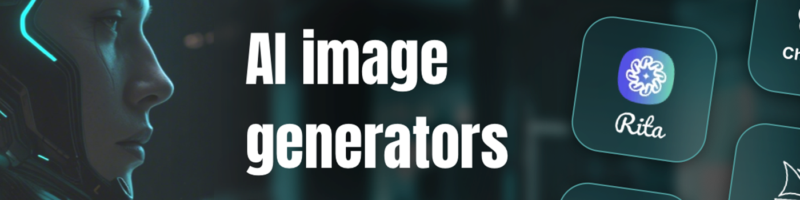
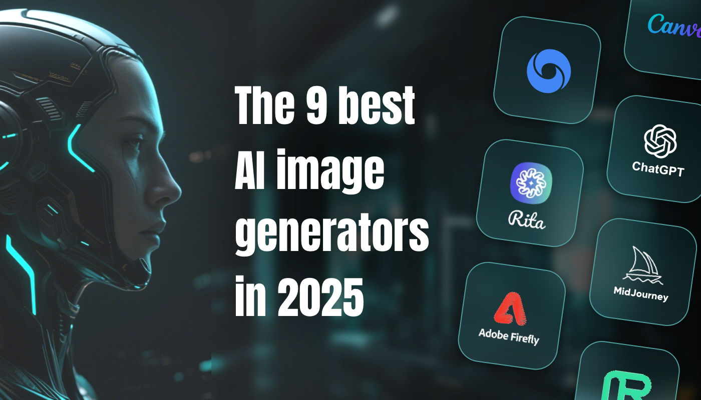
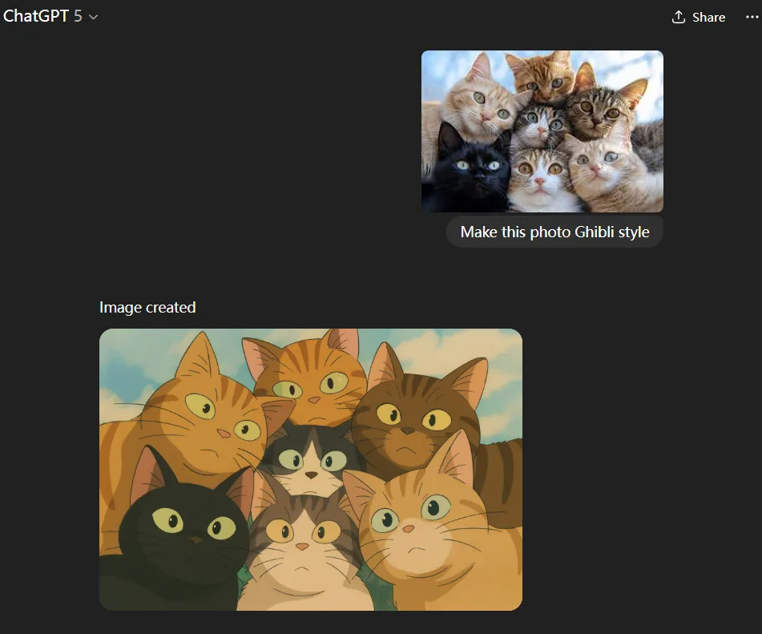
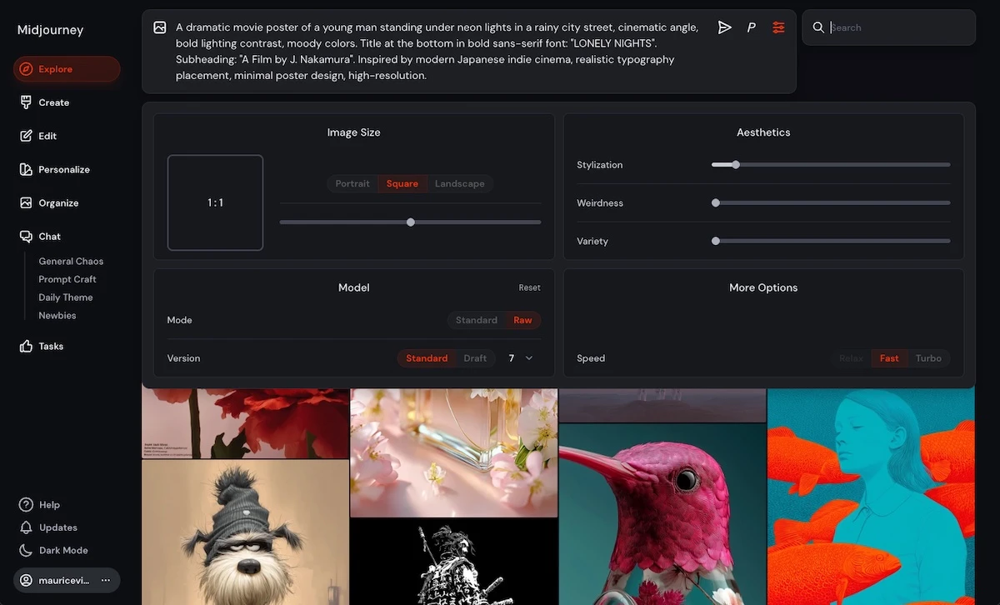
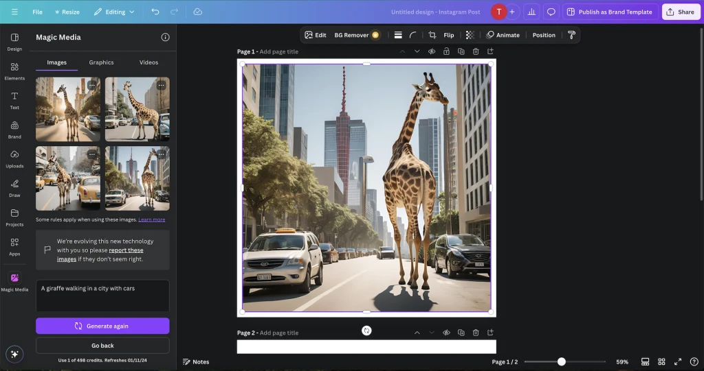
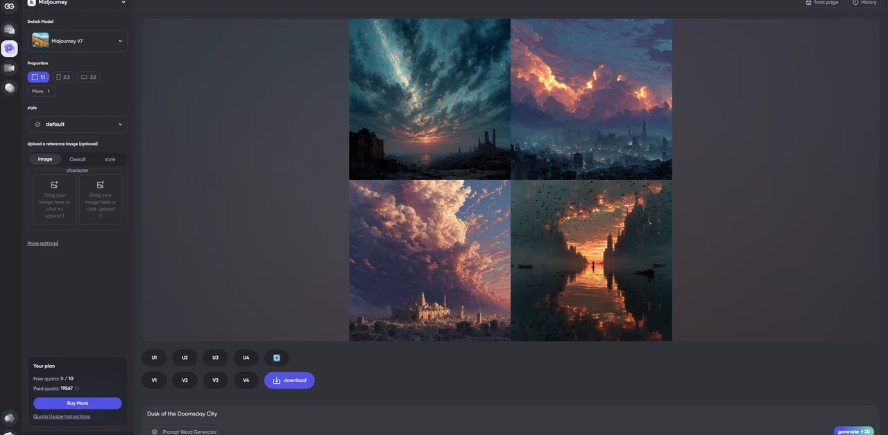
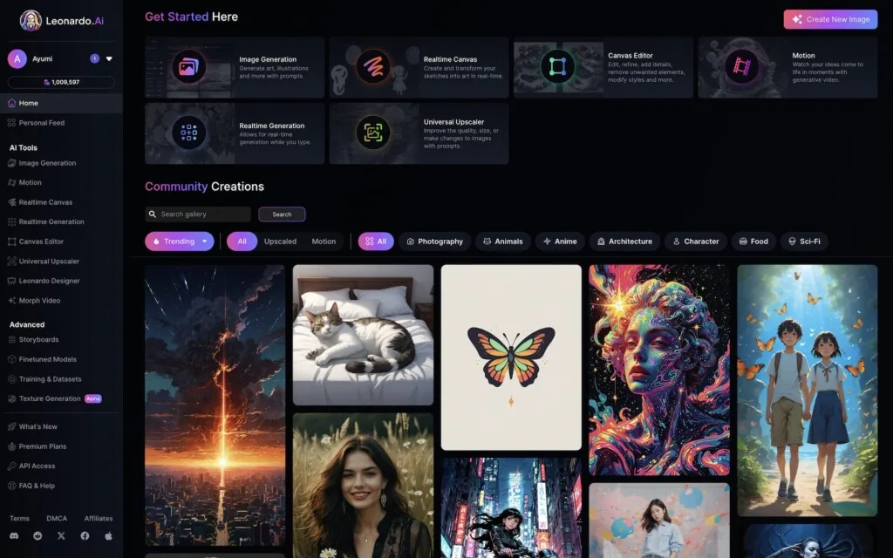

2025 年 8 款最佳 AI 圖像生成器
從事設計多年，我深知從建模到最終圖像需要多長時間。最近，AI 圖像工具改變了這一切——只需輸入提示或草圖，他們就能快速提供可用的草稿，減少重複性工作。
越來越多的創作者正在嘗試這種方法。調查顯示，超過77% 的藝術家表示，文本轉圖像技術確實對他們的工作有所幫助。然而，市面上 AI 工具琳瑯滿目，功能和價格各有不同，找到合適的工具已成為一項真正的挑戰。
無論你是設計師、內容創作者還是初學者，本博客都會滿足不同的預算和需求，幫助你找到價格合理、易於使用且可靠的 AI 工具來創建高質量的圖像。
如何選擇AI圖像生成器
我們列出的每款 AI 圖像生成器都經過了廣泛的使用和測試。作爲在攝影、藝術和設計領域擁有多年經驗的創作者，我和我的團隊親自試用了這些生成器，比較了結果，並研究了它們在不同創作場景中的表現。
我們借鑑了烏爾姆大學 2025 年的一項研究，將文本圖像一致性、視覺質量、風格穩定性和無缺陷性作爲我們的核心標準。在此基礎上，我們還評估了易用性、定價和穩定性，以確保這些工具適合專業人士和具有不同預算和經驗水平的用戶。
通過這次全面的評估，我們確保我們推薦的 AI 圖像生成器不僅在技術上可靠，而且還能真正幫助你更快地工作、提高質量並順利融入你的創意工作流程。
最佳 AI 圖像生成器概述
| 工具 | 圖像質量和風格 | 易於使用 | 商業安全 | 典型價格 | 推薦 |
|---|---|---|---|---|---|
| ChatGPT | 高清晰度，逼真的風格 | ⭐⭐ | 平均的 | 20美元/月 | 👍 推薦 |
| MidJourney | 藝術感強，細節豐富 | ⭐⭐⭐ | 不完全保證 | 30美元/月 | ✅ 強烈推薦 |
| Stable Diffusion | 靈活多樣的風格 | ⭐⭐⭐⭐ | 取決於模型來源 | 20美元/月 | ⚖️ 中性(最適合專家) |
| Canva | 模板友好、風格平衡 | ⭐ | 商業用途(專業版) | 每月 16.50 美元 | 👍 推薦 |
| Adobe Firefly | 高保真、精確佈局 | ⭐⭐ | 完全商業化 | 每月 29.99 美元 | ✅ 強烈推薦 |
| Leonardo AI | 擅長遊戲/3D設計 | ⭐⭐⭐ | 平均的 | 24美元/月 | 👍 推薦 |
| Imagen(谷歌) | 高保真，逼真的外觀 | ⭐⭐ | 尚未廣泛普及 | ~ 0.04 美元/張圖片 | 👍 推薦 |
| Runway Gen-4 | 視頻級別輸出，一致性強 | ⭐⭐ | 平均的 | 28美元/月 | 👍 推薦 |
ChatGPT
GPT-5的新圖像生成功能上線後，我立即進行了測試。它可以將文本轉換爲圖像，也可以將上傳的照片轉換爲畢加索、維米爾或吉卜力等風格，細節穩定，畫質一致。
| GPT-5 的優點 | GPT-5 的缺點 |
|---|---|
|
|
在最新的基準測試中，GPT-5 在 MMMU-Pro 上的得分爲 78.4%，在 VideoMMMU 上的得分爲 84.6%，在多模態理解和處理複雜提示方面表現出色。
它的使用也非常簡單。只需在 ChatGPT 聊天框中輸入描述，即可生成圖像，因此即使是初學者也能快速上手。
但它生成的最大圖像尺寸爲 4K(約 3840×2160 像素)。雖然比一些高分辨率機型分辨率低，但仍然足以滿足日常創意工作的需求。此外，生成速度相對較慢，每張圖片大約需要一分鐘，而且每次只能生成一張。
MidJourney
MidJourney 是當今最具藝術風格和氛圍的AI 圖像生成器。其廣泛應用於插畫和概念設計領域，其最新 v7 版本在光照、細節銳度和快速解讀方面均有顯著提升。
| MidJourney v7 優點 | MidJourney v7 缺點 |
|---|---|
|
|
MidJourney v7 引入了Omni Reference 和 Draft Mode 模式。Omni Reference 模式可讓你將參考圖像中的人物、物體或場景帶入新作品，同時保持風格和場景的一致性。Draft Mode 可將輸出速度提升高達 10 倍，同時節省 GPU 資源，非常適合佈局和概念測試。
它支持文本和語音輸入，現已全面上線網頁，用戶無需依賴 Discord 即可創作。付費用戶只要遵守相關條款，即可將作品用於商業用途。
Stable Diffusion
對於敏感內容或訓練自定義模型，Stable Diffusion 是最靈活的選擇。作爲完全開源的圖像生成器，它可以在本地運行，也可以通過 NightCafe、Tensor.Art 和 Civitai 等平臺在線使用。
| Stable Diffusion優點 | Stable Diffusion缺點 |
|---|---|
|
|
我使用的是 Stable Diffusion 3.5，它提升了細節、快速處理和角色一致性。它能生成穩定、高質量的百萬像素分辨率圖像，非常適合插畫和概念藝術。此外，版權歸創作者所有，如果年收入低於 100 萬美元，則可免費用於商業用途。
需要注意的是，高分辨率生成和長序列任務在大多數情況下仍然需要更強大的 GPU。爲了獲得一致的結果，你還需要一些參數調整和模型管理方面的技能，這可能會給初學者帶來一定的學習難度。
Canva
對於日常的營銷材料或社交帖子，我經常使用 Canva 中的 Magic Media 來生成圖片。它與 Canva 的圖庫無縫銜接，讓我可以立即拖動、編輯、添加文本或應用效果——非常適合快速構思或時間緊迫的情況。
| Canva 優點 | Canva 缺點 |
|---|---|
|
|
Canva Magic Media 支持從寫實照片到手繪插畫的各種風格。只需輸入提示即可獲取 PNG 格式，或使用視頻模式製作場景、動畫和過渡效果。它大約 30 秒 即可完成，且色彩和佈局一致，但其創造力不如專業的 AI 藝術工具。
Adobe Firefly
Adobe Firefly是一款專爲設計團隊和品牌創意人員打造的 AI 工具，在文本渲染和視覺準確性方面表現出色。它能夠生成拼寫正確、色彩穩定、佈局均衡的圖像，因此在商業用途上非常可靠。
| Adobe Firefly 優點 | Adobe Firefly 缺點 |
|---|---|
|
|
它與 Photoshop、Illustrator、Premiere Pro 和 InDesign 等 Creative Cloud 應用程式深度集成，生成的圖像保留圖層以便於後期編輯。
最重要的是，Adobe Firefly 經過 Adobe Stock、公共領域和許可內容的訓練，並受到 Adobe 支持的版權和法律保護，使得大多數輸出可安全用於商業用途。
目前，Firefly 還提供移動應用程式，方便設計師隨時隨地生成和調整圖像。雖然其免費配額有限，且在高度創意的任務中靈活性較低，但其與 Adobe 的無縫集成以及安全的商業用途使其成爲 2025 年最值得信賴的 AI 設計工具之一。
Leonardo AI
想要打造風格一致、與品牌保持一致或富有藝術感的插畫作品，我強烈推薦 Leonardo AI。與許多隻能生成單一輸出的工具不同，它的自定義模型訓練可以鎖定一種風格，因此後續作品的外觀和風格會保持一致。
| Leonardo AI 專業人士 | Leonardo AI 缺點 |
|---|---|
|
|
Leonardo AI支持自定義模型訓練。對於品牌插畫，我收集了 10 到 30 張風格一致的高質量圖片，並配以簡短的說明，以訓練"風格"或"主題"模型。訓練完成後，輸出結果會在各個場景中保持一致的色調和細節，但低質量或混合風格的輸入可能會導致不一致。
如果你想創建視頻，Leonardo AI 支持 2D、3D、動漫和矢量藝術等預設風格。它可以快速生成與靜態圖像一致的剪輯，保持視覺效果的統一，並節省後期製作中調色的時間。
Imagen(谷歌)
在尋找能夠捕捉照片般逼真的光照和細節的AI 工具時，Imagen 脫穎而出。作爲谷歌的旗艦機型，它採用從 64×64 到 1024×1024 的分階段擴散工藝，忠實地呈現皮膚紋理、織物細節和自然光。
| Imagen 3 優點 | Imagen 3 缺點 |
|---|---|
|
|
在實踐中，Imagen 3 可以將複雜的提示轉化爲細緻入微、富有故事性的視覺效果。它尤其適用於時尚拍攝、雜誌社論以及概念敘事等對圖像質量和氛圍要求極高的場景。
它的使用非常簡單，只要你有 Google 賬號，就可以通過 Gemini、ImageFX 或 Vertex AI 來使用。最近，谷歌還推出了 Imagen 4 和 Imagen 4 Ultra 的預覽版，爲我們提供了更加豐富的選擇。
但是，如果你想自由生成人體圖像、批量創建或對現有輸出進行精確編輯，當前功能仍然存在一些限制。

Runway Gen-4
如果你正在製作故事板、動畫預告片或帶有敘事的短片，Gen-4 是市場上爲數不多的能夠同時提供視覺一致性和跨媒體連貫性的 AI 工具之一。
| Runway Gen-4 專業人士 | Runway Gen-4 缺點 |
|---|---|
|
|
我的團隊對它的"參考"功能印象特別深刻。只需上傳一張參考圖片，Gen-4 就能創作出風格、主題和場景在各個角度、光線和動作上保持一致的新視覺效果和視頻。
生成的圖像和視頻高度穩定，擁有接近專業製作的電影級畫質。它甚至可以模擬現實世界的物理現象，例如織物的運動，以增強真實感。
不過，這個強大的功能只有付費用戶才能使用，需要訂閱Runway的付費計劃才能使用。
如何爲 AI 圖像生成器編寫有效的提示
在使用圖像生成工具進行創作時，很多人遇到的最大難題並非軟件本身，而是如何將腦海中的圖像"翻譯"成AI能夠理解的語言。好的提示往往能讓最終成品直接可用。
在編寫提示時，我通常從核心主題開始，例如人物、動物或建築，然後再添加顏色、紋理或動作等特徵。細節越具體，AI 就越不容易出錯。例如：
通用：一個女人正在畫畫
具體來說：一位身穿粉紅色連衣裙的女子在榆樹下作畫，陽光透過樹葉照射在她的肩膀上。
主題確定後，你可以 添加一些故事 。時間、地點、天氣、光線，甚至情感，都能爲最終的照片增添氛圍。例如：
通用：在街上
具體來說：黃昏時分的巴黎小巷，夕陽透過老式路燈投射出金色的光芒。
風格和目的 也很重要。是梵高風格的筆觸，還是簡潔的現代極簡主義？是童話故事書的封面，還是社交媒體的封面？這些細節會引導人工智能在構圖、色彩和細節方面滿足你的需求。
最後，如果你使用 MidJourney 或 Firefly 等平臺，你可以在提示中直接添加分辨率、縱橫比或渲染模式等要求。
最終，有效的提示必須 清晰地定義主題、場景、氛圍、風格和目的。 只要資訊完整清晰，AI就能生成更符合預期的作品。
結論：尋找最佳的AI圖像生成器
在衆多 AI 圖像生成器中，如果你需要多模型支持、對話式創作和高價值功能，環球巴士 是一個值得嘗試的多功能平臺。它集成了 ChatGPT、MidJourney 等功能，讓你可以輕鬆地從插畫任務切換到商業設計任務。
如果你想單獨嘗試其他流行工具，如 ChatGPT、MidJourney、Canva 或 Adobe Firefly，環球巴士 還提供低成本訂閱以訪問官方功能，幫助你節省金錢和麻煩。
無論你選擇哪種方案，AI 圖像生成技術都在快速發展，幾乎每個月都會湧現新的工具和功能。保持好奇心，不斷嘗試，拓展你的創意邊界。立即開始，找到最適合你風格的方案。
常問問題
最逼真的AI人物圖像生成器是什麼？
Imagen(谷歌)和 MidJourney 提供最逼真的效果，其中 Imagen 傾向於逼真的準確性，而 MidJourney 則增添了藝術氣息。
哪個 AI 圖像生成器沒有限制？
Stable Diffusion 完全開源，可以在本地運行，爲自定義模型和敏感內容提供最大的自由。
有沒有免費的 AI 圖像生成器？
是的。Canva、Stable Diffusion 的在線版本有限免費版本可讓你免費試用 AI 圖像生成功能，儘管質量和功能有所不同。